ALMA VIAJANTE EM TERRAS LUSITANAS
Esse blog foi criado para compartilhar com vocês alguns cantinhos especiais que conheci (até agora!) em Portugal, e quem sabe, te inspirar em seus planos de viagem!
Nossa jornada em terras lusitanas se iniciou no dia 01 de abril de 2022, que era dia da mentira no Brasil, mas garanto que foi tudo verdade (risos)!
Meu marido conseguiu uma oportunidade de trabalho em Lisboa, e como já tínhamos há anos o sonho de nos mudar para cá, vimos nisso uma grande oportunidade. Não foi fácil começar do zero, mas tem sido uma experiência extraordinária.
Desde que chegamos, aos poucos, estamos desbravando esse lindo país, e nesse blog, vou compartilhar com vocês alguns lugares maravilhosos que conheci, e contar sob uma perspectiva sincera o que achei deles. Espero poder te inspirar a explorar esse mundo tão lindo, e cheio de lugares encantadores.
Introduções feitas, vamos começar!!!
Torre de Belém- Lisboa


Nesse pequeno fragmento de vídeo, você pode ver um pouco da vista do piso superior da Torre de Belém:
Também chamada de Torre de São Vicente, é localizada no Distrito Histórico de Belém. Teve sua construção iniciada em 1514 no intuito de defesa do país. É um elemento considerado extremamente nacionalista, o que pode ser observado no Brasão de Armas esculpido em diversas partes de sua estrutura.
Deixando de lado o contexto histórico, posso dizer, sem sombra de dúvida que é meu sítio favorito em Lisboa, é um lugar mágico, de uma energia sem igual. Costumo ir até lá ao menos 1 vez ao mês fazer pic-nic, pratica lisboeta que adotei fielmente desde que cheguei rs.
A entrada na torre custa £ 6,00, sendo gratuita até as 14:00 no primeiro domingo de cada mês, e te digo: VALE CADA CENTAVO! Ainda que por dentro seja oca, despida de móveis, contendo apenas canhões, a vista de dentro é surreal, só recomendo um preparo físico para subir as escadas até o último nível liberado!
Aproveite que vai estar no distrito de Belém, e dê um pulinho na pastelaria mais tradicional do país e do mundo, e pela bagatela de £ 1,20 prove o melhor pastel de Belém da sua vida, garanto que não vai se arrepender!
Click aqui para mais informações sobre a Torre de BelémMosteiro dos Jerônimos


Nesse pequenos fragmentos de vídeo, você pode ver um pouco do exterior e do interior do Mosteiro:
Outro monumento localizado no lindo distrito de Belém, o mosteiro dos Jerônimos, construído no século XV, a mando do rei Dom Manuel I, foi sede da Ordem de São Jerônimo. Desde 2016 detém o status de Panteão Nacional. Uma curiosidade é que no Mosteiro dos Jerônimos se encontram os restos mortais do poeta Fernando Pessoa.
Tive a oportunidade de entrar, na época a entrada custou £ 10,00 , e embora destituído de mobiliário, a parte interna não deixa a desejar. Seus azuleijos e tetos abobadados são um espetáculo, o jardim interno é um dos mais lindos que já vi na vida.
É uma visita rápida, não há muito que se fazer no Mosteiro, mas vale a entrada com certeza pela grandiosidade da sua arquitetura. Aproveite para dar uma passadinha no Museu Egípcio que fica ao lado, podendo comprar a entrada combinada a £ 12,00. Ambos com entrada franca até as 14:00 do primeiro domingo de cada mês.
Clique aqui para mais informações sobre o Mosteiro dos JerônimosCastelo de São Jorge-Lisboa
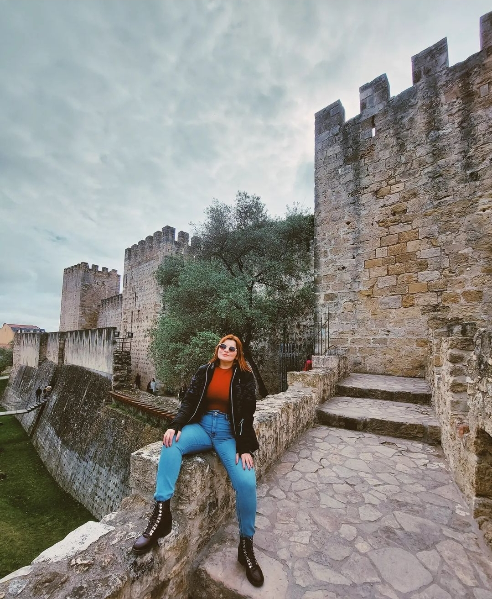 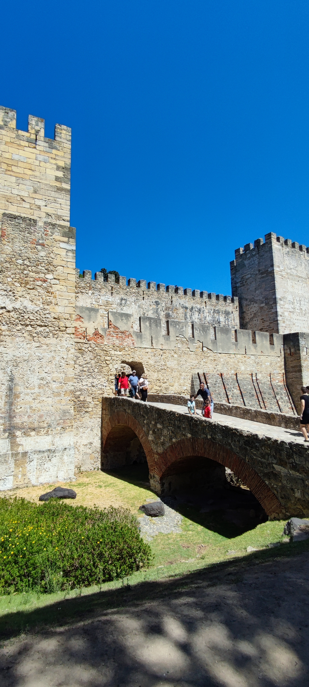 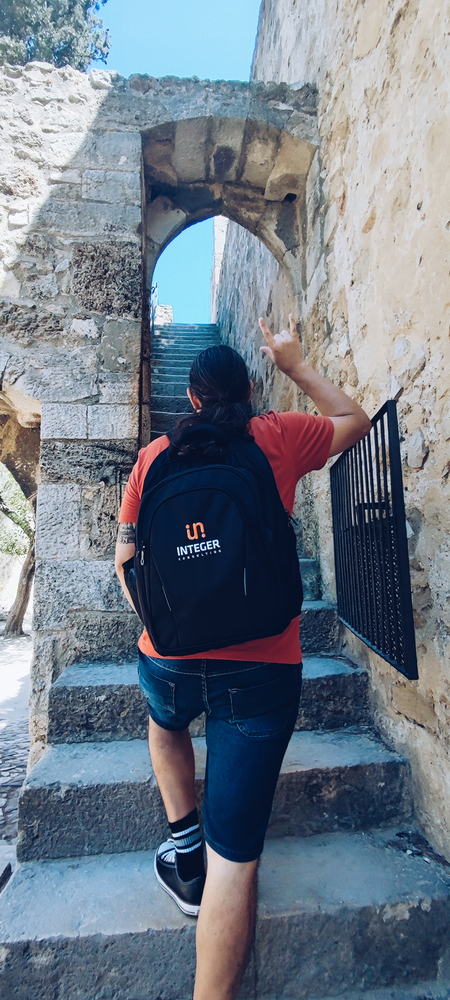
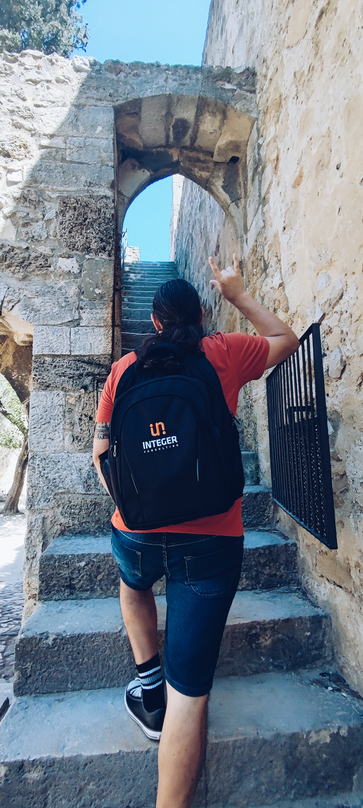

 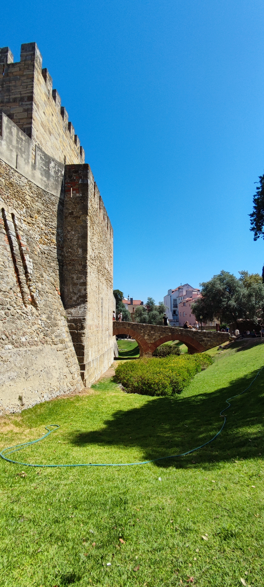
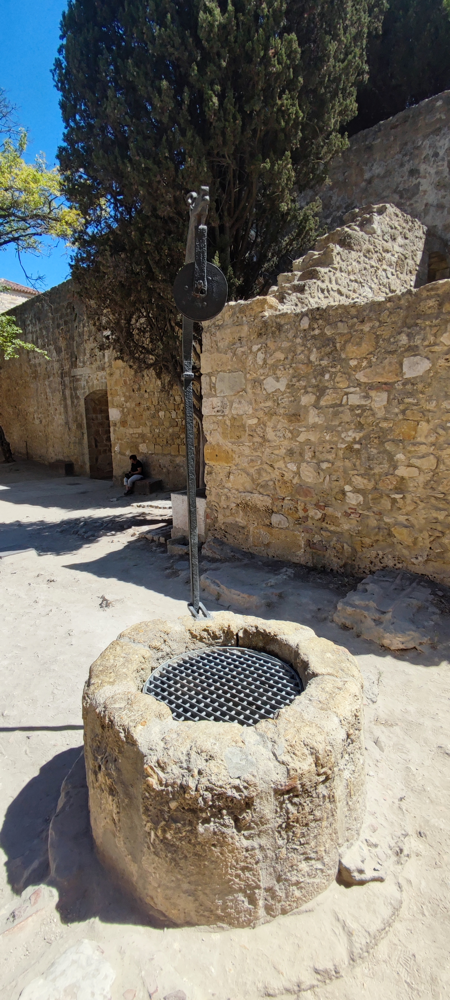
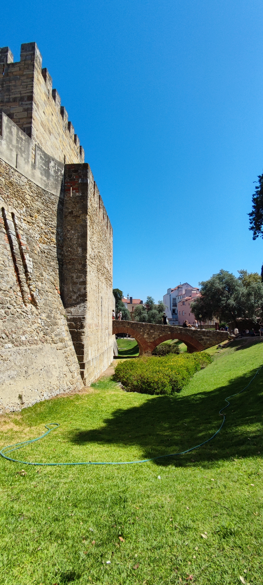
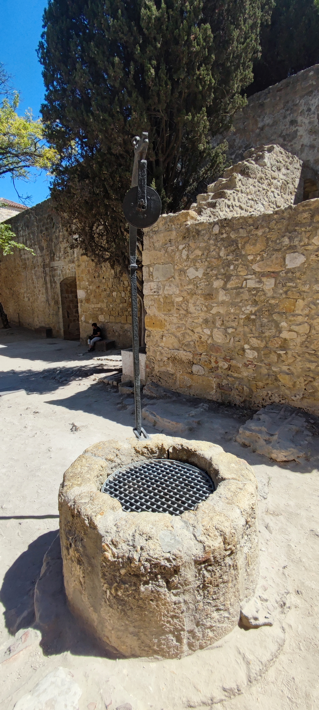
Nesse pequeno fragmento de vídeo, você pode ver um pouco da vista do miradouro do Castelo de São Jorge:
Na freguesia de Santa Maria Maior, em Lisboa encontra-se o Castelo de São Jorge. As primeiras muralhas do castelo datam do século I a.C., e foi reconstruído diversas vezes por vários povos tendo recebido diferentes nomes. O nome atual deriva da devoção do castelo a São Jorge, santo padroeiro dos cavaleiros e das cruzadas, feita por ordem de D. João I no século XIV. Foi classificado como monumento nacional em 1910.
Tive a oportunidade de visitá-lo algumas vezes e definitivamente amo esse lugar. Embora não haja acesso a parte interna, a externa é fascinante. Suas muralhas dão a sensação de estar dentro de Game Of Thrones, o jardim repleto de pavões (todos amigáveis rs) é uma graça.
Não posso deixar de falar do miradouro, um dos mais lindos de Lisboa, com uma vista panorâmica da cidade e um pôr do sol de cair o queixo.
Leve seu vinho e uns croissants e sente para fazer um pic-nic, pois tem muitos cantinhos, mesas e banquinhos para fazer essa prática com conforto. A entrada custa £ 8,00, e é gratuita para residentes do conselho de Lisboa mediante apresentação do comprovante de residência. Vale cada centavo, é um daqueles lugares que não tem como pular no seu planejamento de viagem.
Clique aqui para mais informações sobre a Torre de BelémPalácio de Queluz-Sintra
 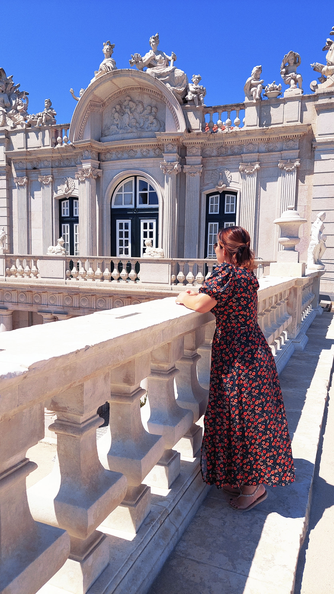
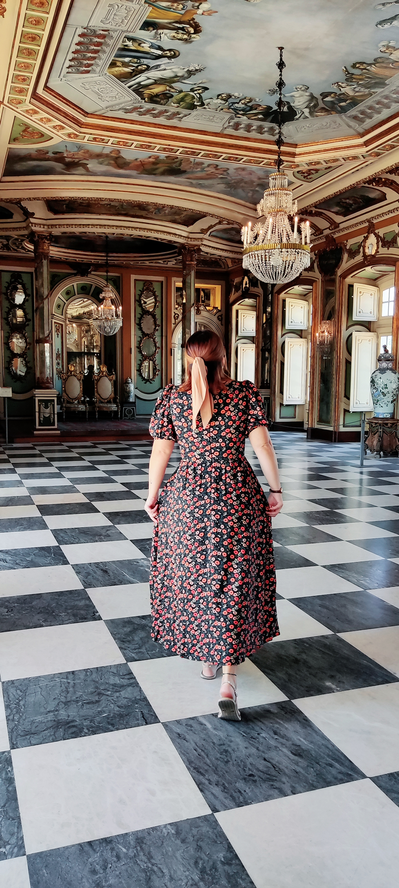
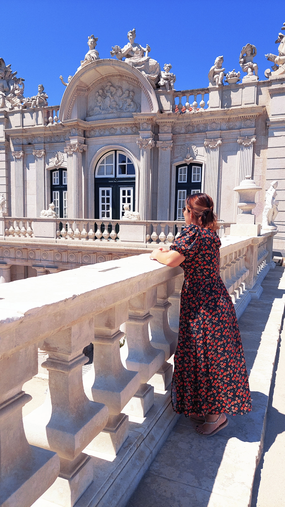
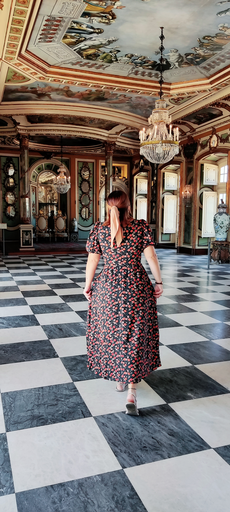
O Palácio nacional de Queluz, carinhosamente apelidado de Versailhes portuguesa (não por acaso), teve sua construção em meados do século XVIII.
Digo que é um lugar escondido e pouco explorado, pois está ao lado dos super lotados e super visitados palácios de Sintra, mas ao contrário do borburinho dos demais, é um lugar calmo, ideal para quem quer passear, mas fugir da muvuca ao mesmo tempo.
O palácio tem uma arquitetura ímpar, e conserva móveis e quadros originais da época, nele se encontram os aposentos do ilustre Dom Pedro II (ou IV em Portugal), onde passou seus últimos momentos. O teto, as pinturas na parede, os móveis, o piso, os lustres, TUDO remete ao luxo imperial, você literalmente se sente uma rainha (ou rei), como se viajasse no tempo com a Tardis do Dr. Who rs.
Recomendo muitíssimo a visita, os jardins são E-S-P-E-T-A-C-U-L-A-R-E-S com todas as letras, realmente lembram a prima francesa, e tem sombrinhas deleciosas para sentar e fazer um pic-nic (óbvio! Rs).
Algo super legal que vi lá é o quanto está preparado para acessibilidade, tanto nas rampas, quanto piso táteis e casas de banho. Resumindo, não pense e VÁ! Vale muito a visita e a entrada de £ 10,00.
Clique aqui para mais informações sobre o Palácio de QueluzQuinta da Regaleira-Sintra
 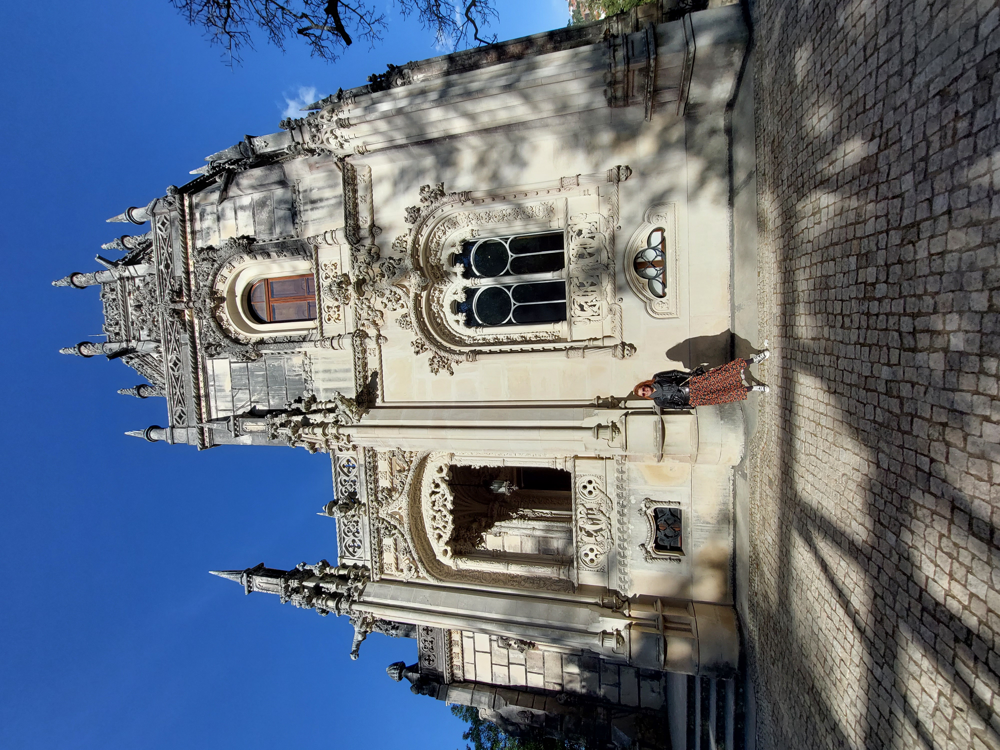
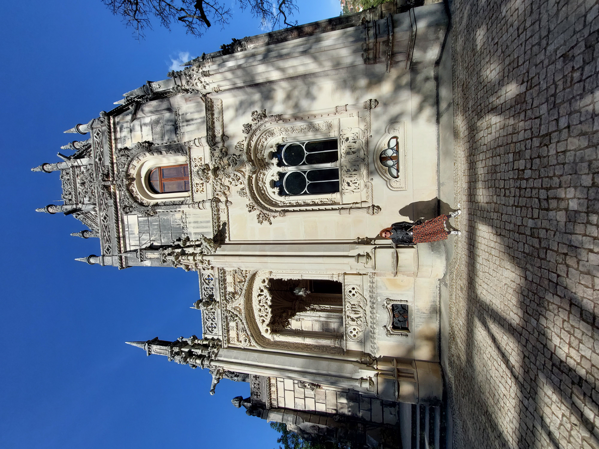


Nesse dia infelizmente a luz interior não estava muito boa, mas pela foto abaixo, você consegue ter uma breve noção da beleza na parte interna do palácio:

Nesse pequeno fragmento de vídeo, você pode ver um pouco do exterior da quinta:
Eu sou suspeita para falar de Sintra, pois é meu sítio favorito em Portugal, mas de tudo que vi nas terras lusitanas, meu coração sempre estará na Quinta da Regaleira.
Lembro que a primeira vez que vi esse lugar eu cai no choro. Chorei que nem criança, pois aquela garotinha que mora no meu eu interior que sonhava em ver um castelo de princesa, viu seu sonho materializado!
Eu juro, se pudesse, levava as minhas malas e mudava pra lá. EU AMO ESSE LUGAR E ELE É ABSOLUTAMENTE LINDO!
Com sua construção estimada em 1697, nas palavras tiradas de seu site oficial, que a descrevem perfeitamente, lê-se “Pensada e construída no transcorrer dos finais de oitocentos, espelha a sensibilidade e os interesses culturais, filosóficos e científicos do proprietário comitente, António Augusto de Carvalho Monteiro (1848-1920), aliados ao virtuosismo do arquiteto-cenógrafo italiano Luigi Manini (1848-1936). Da cultura e criatividade destas duas personalidades, resultou num ensemble arquitetónico eclético-revivalista, com particular enfoque para os estilos Manuelino, Renascentista. Medieval e Clássico.”
Seus jardins de beleza colossal, seu poço iniciático envolvido em mistérios maçônicos, sua arquitetura medieval, seu mobiliário requintado, sem falar nas obras de arte pintadas no teto e nas paredes remetem a um cenário de conto de fadas. Aproveite para fazer um pic nic, mas dessa vez recomendo com carinho que tome um café na cafeteria dentro da quinta. Será o café com a vista mais linda que você já tomou.
A entrada varia conforme a temporada, na época de baixa temporada paguei £ 10,00 e digo que vale cada centavo. Esse é um dos lugares que você vê e nunca esquece, é uma experiência mágica!
Clique aqui para mais informações sobre a Quinta da RegaleiraChalet Biester- Sintra


Nesse pequeno fragmento de vídeo, você pode ver o interior desse lindo chalet, mais especificamente, a sala da lareira:
Mais um encanto na cidade de Sintra, esse é o lindo chalet Biester, que abriu suas portas ao público em 2022 (para minha sorte!) após anos em reforma.
É um tesouro construído em 1890 pelo arquiteto José Luis Monteiro, inpirado no estilo barroco inglês (um dos meus favoritos).
O interior, sério, é S-U-R-R-E-A-L, a sala de estar feita pelas mãos de Luigi Manini e Leandro Braga é coisa de cinema, literalmente, pois você pode vê-la no longa de Roman Polanski, “A Nona Porta”, em cenas de tirar o fôlego com Johnny Depp.
As pinturas no teto e nas paredes são dignas de exposição no Louvre, e curiosamente estão intactas como se não tivessem mais de 100 anos nas costas.
Seus jardins são deslumbrantes, e convidam os visitantes a horas a fio de observação curtindo a natureza, com cantinhos especiais para fazer um pic-nic, ou se preferir, pode dar um pulinho na cafeteria e curtir a vista com seu capuccino. Sem dúvida é uma jóia em Sintra, eu com certeza quero voltar e recomendo a todos a visita, que atualmente custa £ 10,00.
Clique aqui para mais informações sobre o Chalet BiesterPalácio da Pena- Sintra
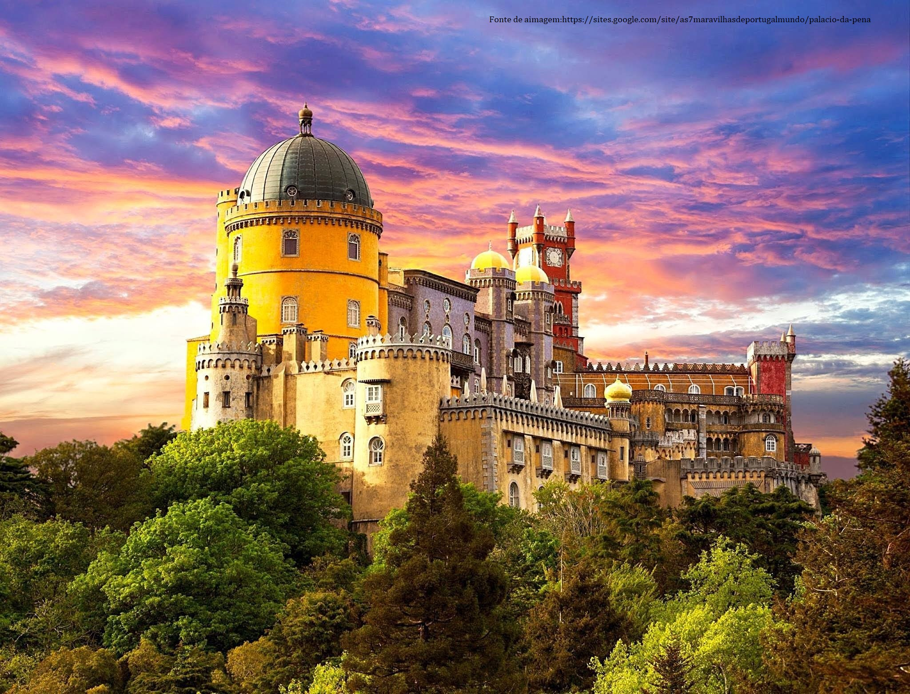


Nesse pequeno fragmento de vídeo, você pode ver um pouco do exterior e da vista estonteante do Palácio da Pena:
Como não falar pra vocês do Palácio da Pena? Que não é apenas um patrimônio nacional, mas considerado Patrimônio Mundial da Unesco. Teve sua construção iniciada no século XII, inicialmente como uma capela, em 1503 foi doado por Dom Manuel I para a Ordem de São Jerônimo. Em 1755 teve várias avarias após o terremoto que acometeu Portugal, tendo sido reconstruído ao longo dos anos.
É diferente de todos os palácios que vi aqui, extremamente colorido e suntuoso, o edifício mais alto de Sintra, junto ao Castelo dos Mouros, sem dúvida vale a visita.
Só aviso que terá que ter paciência, pois é um dos lugares mais visitados do país, sempre lotado independente da época, mas vale, sem dúvida a visita. Não é um lugar para passar muito tempo, não só pela lotação, mas porquê realmente não possui áreas verdes para pic-nic e o restaurante e cafeteria são igualmente lotados, mas ainda assim, é uma visita obrigatória.
A entrada é a mais cara dos palácios de Sintra, em baixa temporada pagamos £ 17,00 cada, mas pagaria de novo, pois é lindíssimo.
Clique aqui para mais informações sobre o Palácio da PenaCastelo de Óbidos-Obidos


 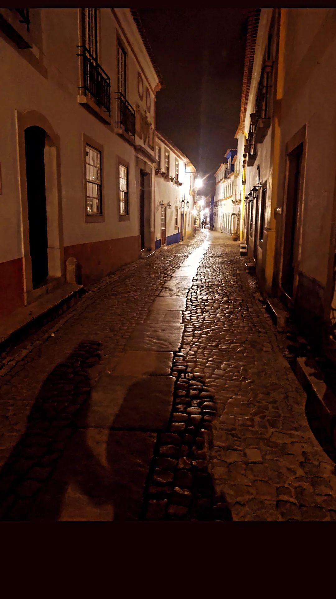
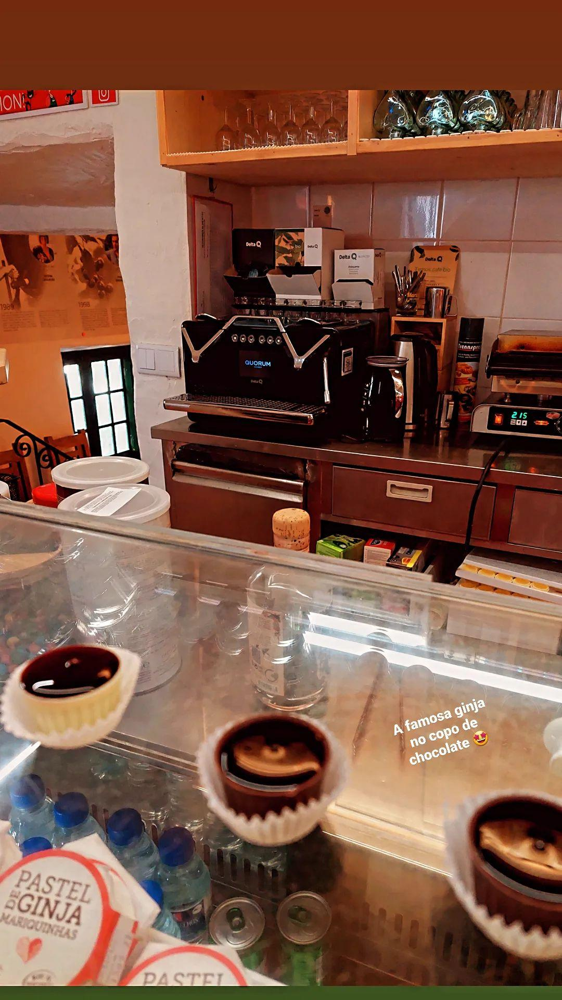
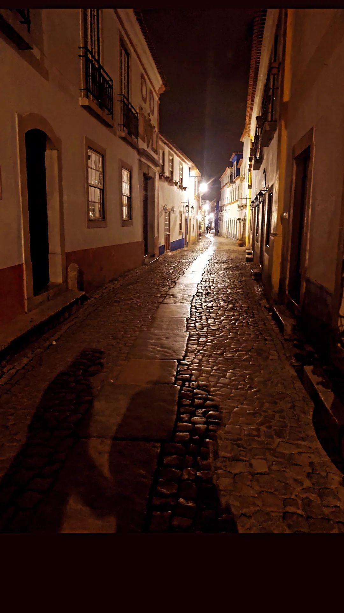
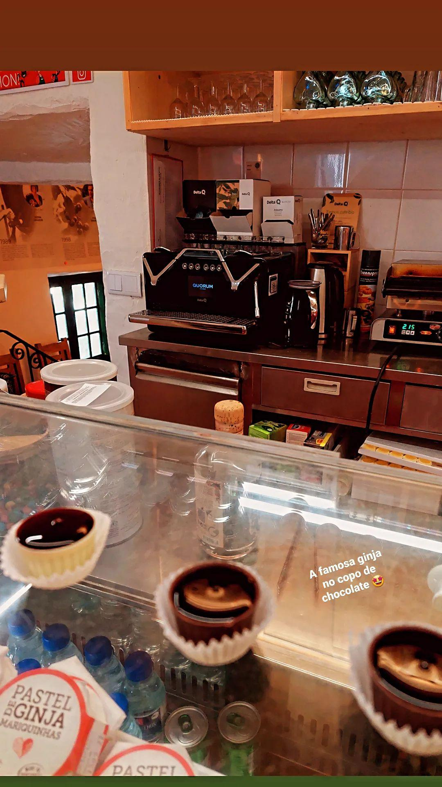
Nesse pequeno fragmento de vídeo, você pode ver um pouco do exterior do Castelo de Óbidos:
Indo rumo ao centro do país, na quente região de Leiria, cheia de cidadezinhas encantadoras como Nazaré, a espiritual Fátima, e Tomar, temos a linda Óbidos, que por motivos justos recebeu o título de cidade medieval.
Óbidos é uma vilazinha pequena, que se divide, uma parte dentro da muralha do castelo e outra fora. Na época em que a visitamos, nós passamos a noite e digo que essa experiência vale muito a pena (as luzes do castelo a noite são lindíssimas).
A vila é um encanto, super conservada, com casinhas que te fazem viajar no tempo. Agora, falando do Castelo, teve sua construção estimada entre os séculos XII e XIII, povoado após a reconquista cristã por Don Afonso Henriques e de lá pra cá tendo passado por muitas mãos, em 1755 sofreu fortes danos com o terremoto, e no século XVIII foi usado como fortificação de artilharia causando derrota à Napoleão. Aos poucos foi sendo reconstruído, o que se finalizou somente em 1932.
As imagens falam por si só, é um monumento grandioso, imponente e que combina com o verde que vemos nos vales a sua volta. De fato, você viaja no tempo e vai até a Camelot do Rei Arthur, sem sombra de dúvida.
Embora a parte interna do castelo não esteja aberta a visitas, o exterior já vale a pena por si só. Com vários cantinhos para fazer pic-nic e onde sentar para smplesmente admirar a vista estonteante. Não deixe de andar os quilômetros de muralha, exige um certo esforço mas a vista lá de cima compensa muito!
Com tempo de curtir a vila, não deixe de parar para provar a legítima ginjinha de óbidos no copo de chocolate, um licor delicioso (e forte por sinal!).Não deixe também de aproveitar as inúmeras lojinhas de souvenir e chocolaterias cheias de delícias que com certeza você vai querer levar pra casa.
Clique aqui para mais informações sobre o Castelo de ÓbidosQUER RECEBER DICAS QUENTÍSSIMAS SOBRE PASSEIOS EM PORTUGAL?
SE INSCREVA NA NOSSA NEWSLETTER!